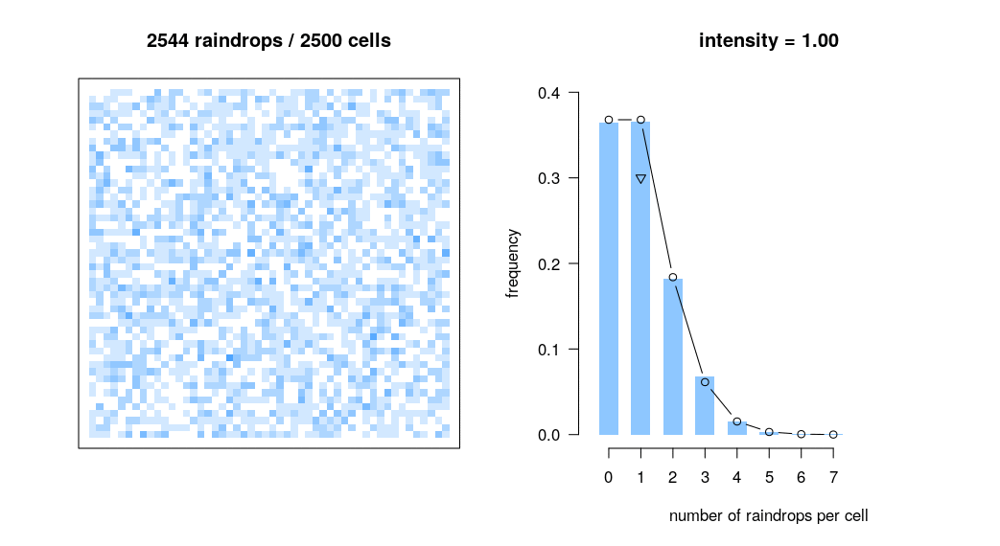

some courses I’ve taught
I currently teach Reproducible Workflows for Scientific Computing, a short course at MPI-EVA based on the Software Carpentry curriculum.
 demonstration of the Poisson scatter theorem
I’ve previously taught the following courses:
- Introduction to Probability, short course for my lab group at MPI-EVA, taught 2020 using Joe Blitzstein’s materials
- The Human Life Course (UNM ANTH 160), taught 2013, 2014, 2015 - syllabus pdf
- Research Computing in Evolutionary Anthropology (UNM ANTH 560), taught 2014, 2015 - syllabus pdf
- Workshop on Statistical Rethinking, taught in 2015
- Evolution and Human Nature (UCD ANT 50), taught 2011, 2015 - syllabus pdf
- Applied Research Methods (UCD ESP 178), taught 2011, 2012, 2015 - syllabus pdf
- Cultural Ecology (UCD ANT 102), taught 2010, 2015 - syllabus pdf